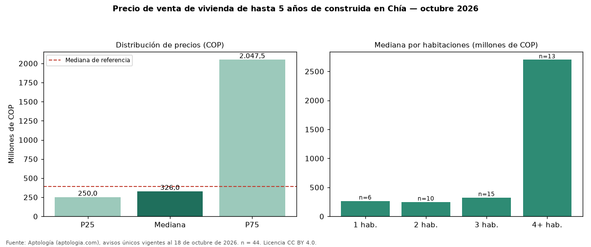

Precio de venta de vivienda de hasta 5 años de construida en Chía — octubre 2026
COP 326 millones es la mediana de venta de vivienda de hasta 5 años de construida en Chía, según 44 avisos únicos. Frente a toda la oferta de venta en Chía (COP 390 millones), la diferencia es de 16 % por debajo. El rango intercuartílico va de COP 250 millones a COP 2,05 mil millones (razón 8,2). Por metro cuadrado, la mediana es COP 6.020.408/m² (+17 % frente a COP 5.131.661/m²), puesto 4 de 11 ciudades comparables. Por habitaciones: 1 habitación, COP 266 millones (n = 6); 2 habitaciones, COP 248 millones (n = 10); 3 habitaciones, COP 325 millones (n = 15); 4 o más habitaciones, COP 2,70 mil millones (n = 13). El área mediana es 51 m² (referencia: 70 m²). El estrato más frecuente es 3. Datos abiertos CC BY 4.0 de Aptología; fuente y búsqueda de inmuebles: https://www.aptologia.com/venta/chia. Archivos: PDF de 2 páginas, CSV con las cifras y gráfica PNG.

| Avisos únicos | 44 |
|---|---|
| Percentil 25 | COP 250.000.000 |
| Mediana | COP 326.000.000 |
| Percentil 75 | COP 2.047.500.000 |
| Mediana por m² | COP 6.020.408 |
Fuente: avisos vigentes de portales inmobiliarios recopilados por Aptología, deduplicados (mínimo 30 avisos únicos por celda). Precios pedidos, no cerrados. Fecha: 2026-10-18.